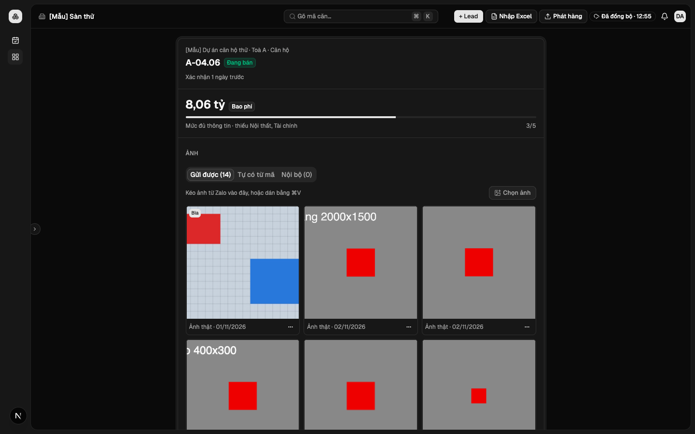
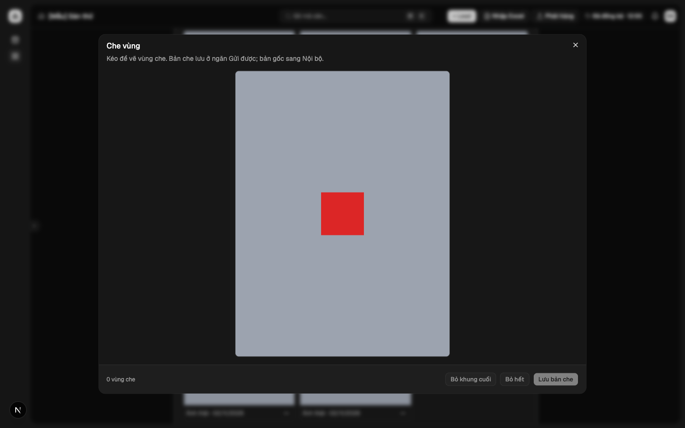
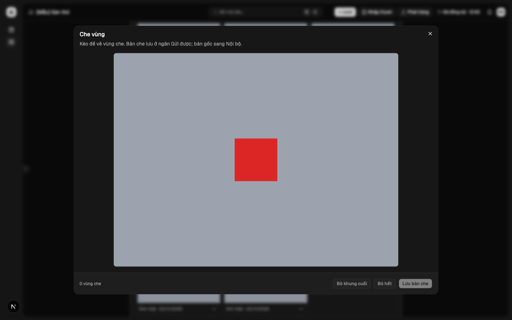
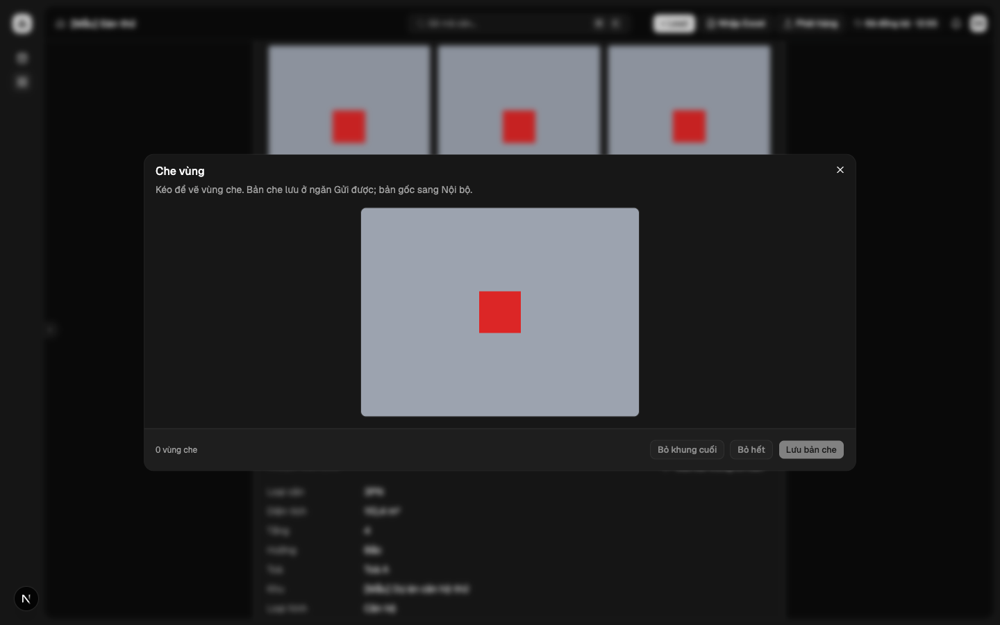
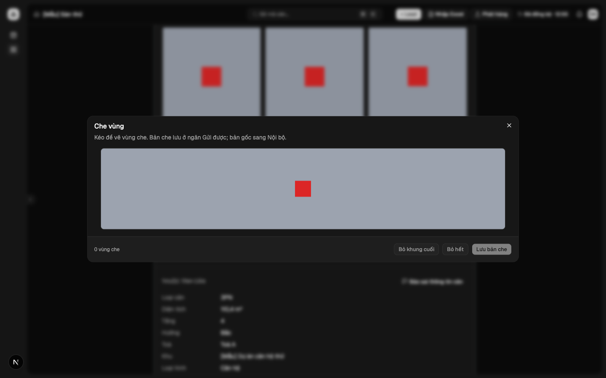
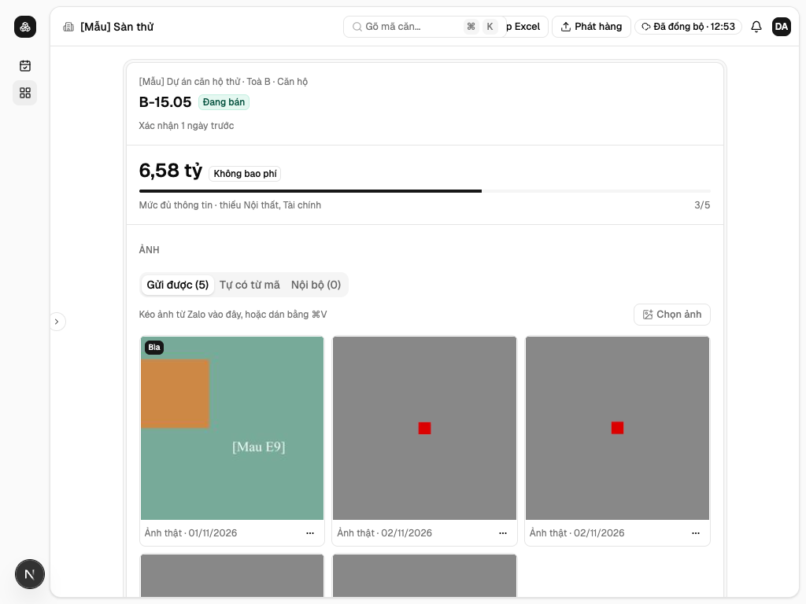
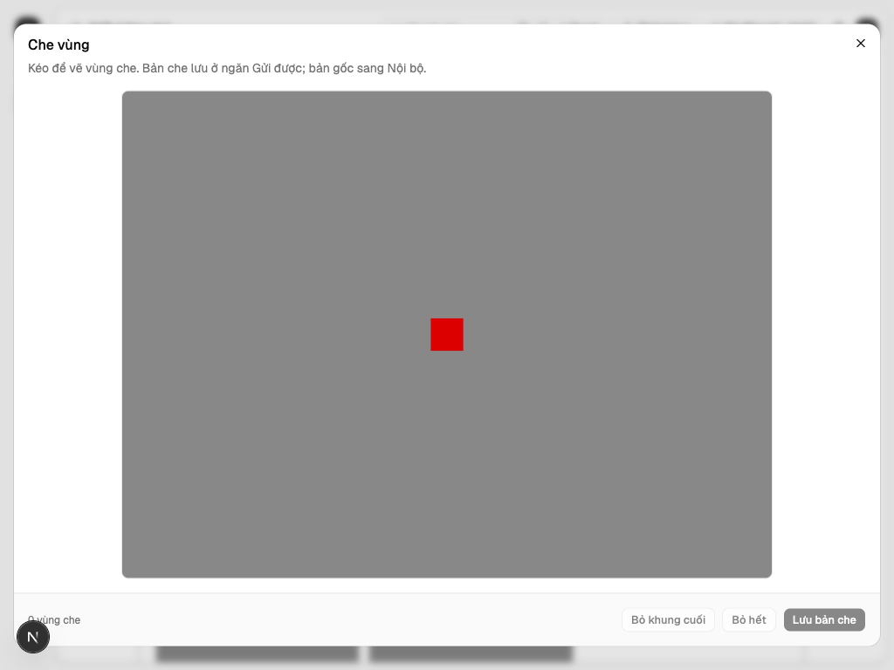
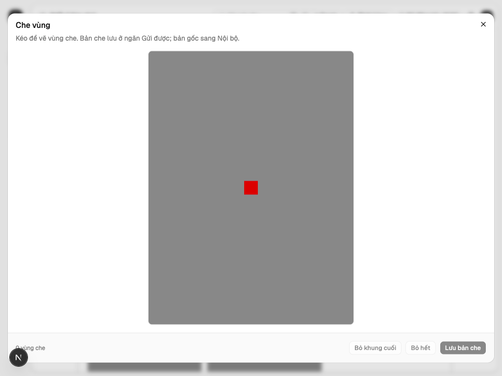
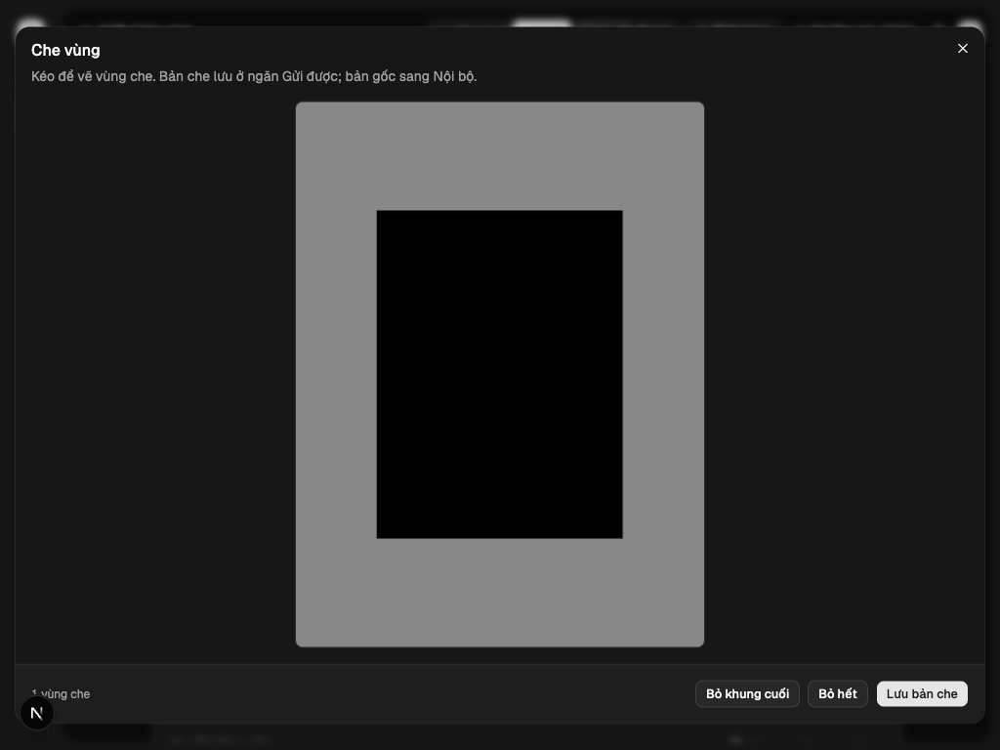
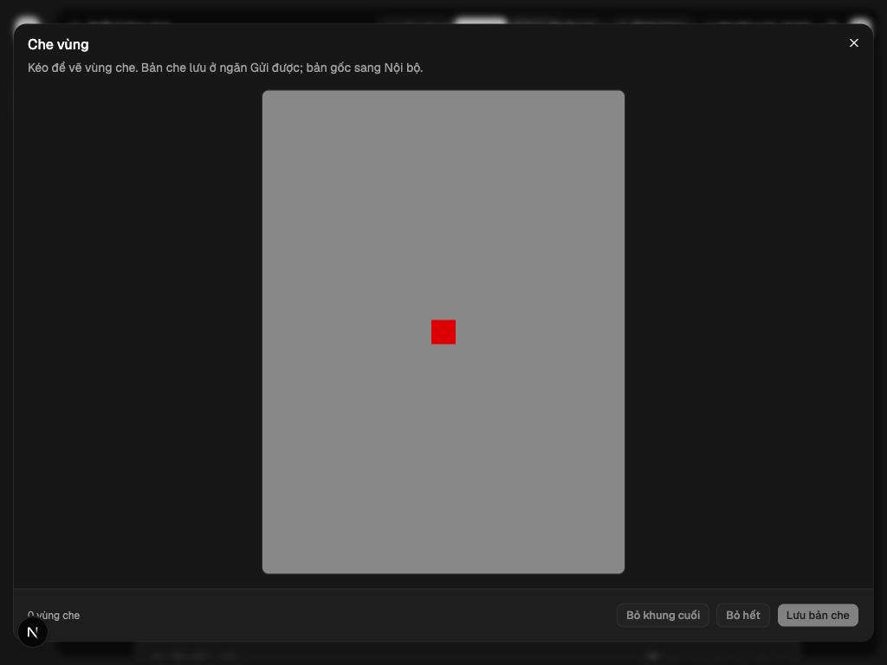

Vá Che vùng ảnh — trên máy tính khung vẽ nằm gọn trong hộp che ở mọi cỡ ảnh, ảnh co theo khung; điện thoại giữ như cũ
Vì sao làm
Hàng phát sinh từ Cổng Bằng chứng hàng 19 (_acceptance/che-vung-anh/): chủ kho chọn «mở hợp đồng mới» cho Ngoài-3 — hộp che bị giữ ở bề rộng 24rem trên máy tính nên khung vẽ (tới 960×600) tràn khỏi hộp và đè lên hàng nút. Chỉ đổi trình che (units/photos/redact/); không đổi lưu bản che, máy chủ hay cơ sở dữ liệu.
Đã hứa
- AC-1 — Given khung vẽ đang hiện nhỏ hơn cỡ vẽ của nó (đã co theo hộp), When đầu chủ kéo chuột từ điểm a tới điểm b trên
- AC-2 — Given máy tính khổ 1440×900, When đầu chủ mở «Che vùng…» cho ảnh ngang lớn (2000×1500), ảnh dọc (1500×2000), ảnh
- AC-3 — Given máy tính khổ 1024×768, When mở «Che vùng…» cho ảnh ngang lớn và ảnh dọc, Then hộp nằm trọn trong màn, khung vẽ
- AC-4 — Given khung vẽ đang co (khổ 1024×768, ảnh dọc), When đầu chủ kéo một khung trên màn, Then vùng tô đen trên khung vẽ
- AC-5 — Given điện thoại khổ 375×812, When mở «Che vùng…» cho ảnh ngang lớn, Then giữ như trước vòng này: hộp che rộng gần
- AC-6 — Given bài kiểm của hàng 19 (đổi toạ độ, tô kín, cỡ bản nhẹ, EXIF, lưu bản che), When chạy lại sau vòng này, Then vẫn
Thiết kế
_acceptance/va-che-vung-anh/design.md
Quyết định
- 2026-11-02 · Máy · approach · S1 — Đã tra tri thức: Vá Che vùng ảnh: trên máy tính khung vẽ nằm gọn trong hộp che ở mọi cỡ ảnh, ảnh co theo khung; điện thoại giữ như cũKho đã khai tri_thuc — bước thiết kế tra trang trước khi chọn.
- 2026-11-02 · Máy · approach · S1 — Khung vẽ giữ cỡ vẽ cũ (co vừa 960×600) và chỉ co khi hiển thị bằng CSS theo bề ngang hộp và bề cao màn; điểm kéo đổi từ cỡ hiển thị sang cỡ vẽ bằng một hàm thuần trước phép đổi sang điểm ảnh.Câu giao đòi «ảnh co theo khung»; phép đổi điểm ảnh của hàng 19 (khungTuMan) đúng khi biết cỡ vẽ, nên chỉ cần thêm một bước đổi cỡ hiển thị → cỡ vẽ, đo bằng bài thuần E1.
- 2026-11-02 · Máy · approach · S1 — Hộp che trên máy tính rộng tới 64rem (sm:max-w-5xl) và khung vẽ có trần cao theo màn — ghi là ngoại lệ có hạn của hệ bố cục tới khi trình che chuyển sang ngăn nổi của hàng 91.Hàng 91 (hệ bố cục, ngăn nổi) chưa gộp lúc mở vòng; 64rem là bậc nhỏ nhất của thang giữ trọn khung vẽ 960 cộng lề hộp.
- 2026-11-02 · Máy · approach · S1 — Điện thoại giữ hộp che rộng gần hết bề ngang như cũ và không thêm thao tác cảm ứng; khung vẽ co theo hộp cũng trên điện thoại vì cùng một luật hiển thị.Hàng 19 để «Che trên điện thoại (cảm ứng)» ngoài phạm vi; lớp sm:max-w-5xl không áp dưới 640px nên bề rộng hộp trên điện thoại không đổi.
- 2026-11-02 · Máy · descope · S1 — KHÔNG vá Ngoài-4 hàng 19 (khung đã bỏ còn hiện trên PNG trong suốt) dù cùng tệp — giữ Known limits chủ kho đã chọn.Chủ kho chỉ mở hợp đồng mới cho Ngoài-3; Ngoài-4 đã ghi Known limits ở Cổng Bằng chứng hàng 19.
- 2026-11-02 · Máy · descope · S1 — KHÔNG sửa hộp xem ảnh lớn ở muc-anh.tsx (cùng kiểu lỗi bề rộng) — ngoài vùng của hàng; gửi giám sát bằng việc phụ.Vùng của hàng chỉ là units/photos/redact/** và hồ sơ; câu giao chỉ nói hộp che.
- 2026-11-02 · Máy · descope · S1 — bỏ coverage-scan — một lỗi đã có tên (Ngoài-3 hàng 19), trục cỡ ảnh × khổ màn liệt thẳng trong tiêu chí; đổi lại không có bằng chứng độ phủKhông gian lỗi là một mục Ngoài đã định, không phải dạng liệt kê cho đủ.
- 2026-11-02 · Máy · descope · S1 — bỏ design-pass — vá bề rộng hộp và cỡ hiện khung vẽ trên màn đã có của hàng 19, không thêm màn, khối hay khuônBài nhìn E2–E5 chụp ba khổ × bốn cỡ ảnh ở S4 thay khoảnh khắc nhìn trước duyệt.
- 2026-11-02 · Máy · descope · S1 — bỏ đặc-tả-UX — vá cỡ hiển thị trên màn đã có đặc tả của hàng 19Cấu trúc, khối và trạng thái của trình che không đổi; chỉ đổi bề rộng hộp và cỡ hiện của khung vẽ.
- 2026-11-02 · Máy · approach · S1 — Hộp che trên máy tính rộng tới 64rem (sm:max-w-5xl) và khung vẽ có trần cao theo màn — ngoại lệ có hạn của hệ bố cục ghi ở Notes hợp đồng và chú thích tại chỗ (lệch chỗ ADR-0024 quy định là bản đồ khuôn); nếu hàng 91 gộp trước thì xin chạm bản đồ khuôn và ghi ở đó.Gap-probe P1: câu trích ADR bảo ghi ở bản đồ khuôn, mà design/patterns/ ngoài vùng của hàng; hàng 91 có thể gộp trước và mang luật quét khuôn.
- 2026-11-02 · Máy · approach · S1 — Điện thoại giữ hộp che rộng gần hết bề ngang, cùng ba nút, không thêm thao tác cảm ứng; đổi duy nhất là khung vẽ co theo hộp (cùng một luật hiển thị với máy tính).Gap-probe P2: câu trích hàng 19 chỉ liên quan; điều quyết là câu giao «khung vẽ nằm gọn trong hộp che … ảnh co theo khung», AC-5 nay nói rõ điều giữ và điều đổi.
- 2026-11-02 · Người · seal · gate1 —
- 2026-11-02 · Máy · fix · S3 — Bề rộng hộp che trên máy tính đổi từ sm:max-w-5xl sang sm:max-w-[min(64rem,calc(100%-2rem))] — vẫn 64rem ở màn rộng, nhưng giữ lề 1rem hai bên ở khổ 640–1056px.Tự kiểm ở khổ 1024×768: hộp sm:max-w-5xl rộng đúng 1024px, sát hai mép màn (lớp sm: thay mất trần calc(100%-2rem) của hộp mặc định).
- 2026-11-02 · Máy · fix · S4-r1 — Không sửa vật: E8 đỏ vì eslint quét bản sao kịch bản chấm mà phiên đặt trong .acceptance-runs/ của worktree (lỗi cú pháp ở tệp ngoài sản phẩm); dời bản sao ra thư mục tạm của phiên rồi chấm lại lượt 2 trên cùng commit.Báo cáo lượt 1, E8: «.acceptance-runs/va-che-vung-anh/acceptance-verify.js 210:3 error Parsing error» — cùng lệnh trên cây không có tệp ấy chạy xanh (mức nợ 0/0, chuẩn đạt).
- 2026-11-02 · Máy · fix · S4-r2 — Không sửa vật: E2 và E4 bắt buộc ghi số đo đo bằng mã trong trang vào evidence/E2-measure.json, E4-measure.json, cỡ hiển thị đo bằng clientWidth × clientHeight (không viền); chấm lượt 3 chạy lại mọi bài, không mang sang.Lượt 2: hội đồng xác nhận 4 lỗ trong hợp đồng (AC-2, AC-4) — bằng chứng E2, E4 mang sang từ lượt 1 chỉ ước trên ảnh chụp, không có rect, RGBA, hệ số co; lượt 1 thêm finding đo cả viền làm ảnh nhỏ thành 402×302.
- 2026-11-02 · Máy · revisit · gate2 — Ngoài-1: ghi Known limitsmáy tự định tuyến theo đề xuất S4 «known-limits» — kho bật feature_loop.ngoai_n_tu_dinh_tuyen
- 2026-11-02 · Máy · revisit · gate2 — Ngoài-2: chấp nhận, không sửamáy tự định tuyến theo đề xuất S4 «wont-fix» — kho bật feature_loop.ngoai_n_tu_dinh_tuyen
- 2026-11-02 · Máy · revisit · gate2 — Ngoài-4: ghi Known limitsmáy tự định tuyến theo đề xuất S4 «known-limits» — kho bật feature_loop.ngoai_n_tu_dinh_tuyen
Bằng chứng
Các eval
| Eval | Tiêu chí | Loại | Verdict | run_id | verified_at |
|---|---|---|---|---|---|
| E1 | AC-1 | test | PASS | minted-va-che-vung-anh-E1-r3 | 2026-11-02T05:50:20Z |
| E2 | AC-2 | ui-check | PASS | e2-va-che-vung-anh-20261102T0555Z | 2026-11-02T05:50:20Z |
| E3 | AC-3 | ui-check | PASS | minted-va-che-vung-anh-E3-r3 | 2026-11-02T05:50:20Z |
| E4 | AC-4 | ui-check | PASS | minted-va-che-vung-anh-E4-r3 | 2026-11-02T05:50:20Z |
| E5 | AC-5 | ui-check | PASS | E5-20261102-doclap | 2026-11-02T05:50:20Z |
| E6 | AC-6 | test | PASS | minted-va-che-vung-anh-E6-r3 | 2026-11-02T05:50:20Z |
| E7 | AC-6 | script | PASS | minted-va-che-vung-anh-E7-r3 | 2026-11-02T05:50:20Z |
| E8 | AC-6 | script | PASS | minted-va-che-vung-anh-E8-r3 | 2026-11-02T05:50:20Z |
| E9 | AC-6 | script | PASS | minted-va-che-vung-anh-E9-r3 | 2026-11-02T05:50:20Z |
| E10 | AC-6 | script | PASS | minted-va-che-vung-anh-E10-r3 | 2026-11-02T05:50:20Z |
Chi tiết từng eval
PASS E1 · test
AC-1: Given khung vẽ đang hiện nhỏ hơn cỡ vẽ của nó (đã co theo hộp), When đầu chủ kéo chuột từ điểm a tới điểm b trên
npm test -w @quy-hang/web ℹ duration_ms 355.299042
PASS E2 · ui-check
AC-2: Given máy tính khổ 1440×900, When đầu chủ mở «Che vùng…» cho ảnh ngang lớn (2000×1500), ảnh dọc (1500×2000), ảnh






PASS E3 · ui-check
AC-3: Given máy tính khổ 1024×768, When mở «Che vùng…» cho ảnh ngang lớn và ảnh dọc, Then hộp nằm trọn trong màn, khung vẽ





PASS E4 · ui-check
AC-4: Given khung vẽ đang co (khổ 1024×768, ảnh dọc), When đầu chủ kéo một khung trên màn, Then vùng tô đen trên khung vẽ



PASS E5 · ui-check
AC-5: Given điện thoại khổ 375×812, When mở «Che vùng…» cho ảnh ngang lớn, Then giữ như trước vòng này: hộp che rộng gần
PASS E6 · test
AC-6: Given bài kiểm của hàng 19 (đổi toạ độ, tô kín, cỡ bản nhẹ, EXIF, lưu bản che), When chạy lại sau vòng này, Then vẫn
npm test -w @quy-hang/web ℹ duration_ms 355.299042
PASS E7 · script
AC-6: Given bài kiểm của hàng 19 (đổi toạ độ, tô kín, cỡ bản nhẹ, EXIF, lưu bản che), When chạy lại sau vòng này, Then vẫn
PASS E8 · script
AC-6: Given bài kiểm của hàng 19 (đổi toạ độ, tô kín, cỡ bản nhẹ, EXIF, lưu bản che), When chạy lại sau vòng này, Then vẫn
chuẩn giao diện: đạt
PASS E9 · script
AC-6: Given bài kiểm của hàng 19 (đổi toạ độ, tô kín, cỡ bản nhẹ, EXIF, lưu bản che), When chạy lại sau vòng này, Then vẫn
PASS E10 · script
AC-6: Given bài kiểm của hàng 19 (đổi toạ độ, tô kín, cỡ bản nhẹ, EXIF, lưu bản che), When chạy lại sau vòng này, Then vẫn
0 tệp ngoài ranh giới
Eval không phân biệt (Analyst)
Vòng verify
- Round 1: E8 failed — bản sao kịch bản chấm nằm trong cây làm lint đỏ; dời ra ngoài cây, chấm lại.
- Round 2: E7, E8 chạy lại, các eval còn lại mang sang từ round 1; bài nhìn E2, E4 bị phát hiện thiếu tệp số đo — bắt ghi số đo vào evidence/<E>-measure.json, chấm lại.
- Round 3: chạy lại toàn bộ 10 eval trên commit 157c783; E2–E5 ghi đủ khung ảnh, số đo và mạng — tất cả PASS.
Tài nguyên
| Khối | Tác tử | Token đầu ra |
|---|---|---|
| S4 round 1 | 21 | 119.420 |
| S4 round 2 | 17 | 47.432 |
| S4 round 3 | 21 | 125.340 |
3 lượt chấm · tổng 292.192 token
Giới hạn và ngoài hợp đồng
- Ngoài-4 hàng 19 — khung đã bỏ còn hiện trên PNG có vùng trong suốt (chủ kho đã chọn Known limits).
- Hộp xem ảnh lớn ở `units/photos/muc-anh.tsx` mang cùng kiểu lỗi bề rộng — ngoài vùng của hàng, gửi giám sát.
- Che bằng cảm ứng trên điện thoại (ngoài phạm vi hàng 19).
- Chuyển trình che sang ngăn nổi của hệ bố cục — việc của hàng 91.
Giao
chưa ghi quan sát production